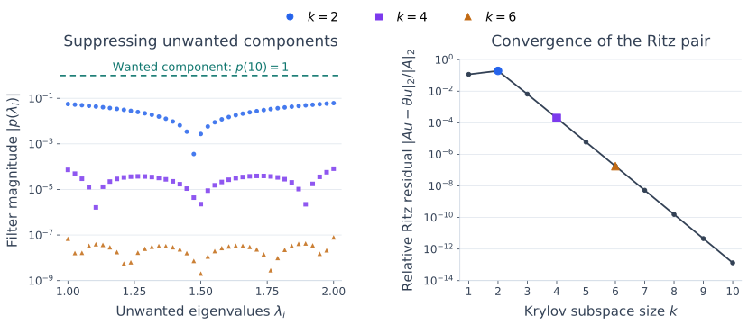

Convergence of the Arnoldi Process#
The previous section constructed the orthonormal basis \(Q_k\) and its projected matrix \(H_k\). To understand the resulting eigenvalue approximations, we need to connect the directions in the subspace to the Ritz pairs extracted from it.
Polynomials provide that connection. Every vector in a Krylov subspace has the form \(p(A)q_1\). We will show how the Ritz values determine such polynomials, how these polynomials can isolate a wanted eigenvector, and how the Arnoldi residual measures the accuracy of the resulting pair.
We work in exact arithmetic with \(A\in\mathbb C^{n\times n}\) and \(\|q_1\|_2=1\). For real matrices and vectors, conjugate transpose reduces to transpose.
Recall the Arnoldi relation
Here \(e_k\) selects the last column, and \(f_k\) is the part of \(Aq_k\) perpendicular to the current subspace:
If this remainder is nonzero, \(f_k=h_{k+1,k}q_{k+1}\), where \(h_{k+1,k}=\|f_k\|_2\) and \(q_{k+1}\) is a unit vector. If \(f_k=0\), the subspace is invariant.
Extracting Ritz Pairs and Checking Their Residuals#
Apply the Rayleigh–Ritz construction to the matrix produced by Arnoldi:
The associated Ritz vector is \(u=Q_ky\), with \(\|u\|_2=1\). A single eigenpair of \(H_k\) suffices; \(H_k\) need not be diagonalizable.
Define the residual \(r=Au-\theta u\) to measure how closely this pair satisfies the original eigenvector equation. Multiplying the Arnoldi relation by \(y\) gives
Therefore,
Here \(e_k^Ty=(y)_k\) is the last component of \(y\), and \(\|f_k\|_2=h_{k+1,k}\). This check requires only the remainder norm and one component of the small eigenvector. We can assess each Ritz pair without forming \(u\) or performing another multiplication by \(A\).
In Python, all the residual estimates can be computed together:
# Use arnoldi_iteration from the preceding section.
Q, H, f = arnoldi_iteration(A, q1, k)
theta, Y = np.linalg.eig(H)
# Normalize the small eigenvectors before comparing residuals.
Y /= np.linalg.norm(Y, axis=0)
residual_estimates = np.linalg.norm(f) * np.abs(Y[-1, :])
# Form a particular Ritz vector only when it is needed.
j = 0
u = Q @ Y[:, j]
actual_residual = np.linalg.norm(A @ u - theta[j] * u)
The estimates use the exact-arithmetic identity and can differ from explicitly computed residuals because of rounding. Near the requested accuracy, an explicit residual check is useful. Residuals should be judged relative to the scale of the problem.
This gives us a practical accuracy check. To explain why increasing \(k\) can improve the approximations, we next examine the polynomial combinations available in the Krylov subspace. We return to the eigenvalue error guaranteed by a small residual after that analysis.
Polynomials Describe the Available Approximations#
The basis result proved on the preceding page, Theorem 30, lets us analyze Arnoldi through the generators of its Krylov subspace. A linear combination of those vectors can be written as
Consequently,
The power method uses one particular polynomial, \(p(z)=z^{k-1}\). Arnoldi makes the whole space of these polynomial combinations available to the projected eigenvalue problem.
The Cayley–Hamilton Theorem#
We want to relate polynomials of \(A\) to the eigenvalues computed from \(H_k\). Cayley–Hamilton gives the starting point: a matrix’s characteristic polynomial annihilates that matrix. We will apply this fact to \(H_k\) to derive Arnoldi’s polynomial optimality property.
Definition 2 (Characteristic Polynomial)
The characteristic polynomial of \(A\) is the monic polynomial
Here monic means that its leading coefficient is one.
Theorem 31 (Cayley–Hamilton Theorem)
Every square matrix satisfies
Proof. Use a complex Schur decomposition \(A=QTQ^H\), where \(T\) is upper triangular with diagonal \(\lambda_1,\ldots,\lambda_n\). Then
Let \(E_j=\operatorname{span}\{e_1,\ldots,e_j\}\), with \(E_0=\{0\}\). Upper triangularity gives
Indeed, multiplication cannot create a coordinate beyond \(j\), and the \(j\)th coordinate becomes zero. Applying the factors from right to left therefore sends \(E_n\) successively into \(E_{n-1},\ldots,E_0\):
Hence \(p_A(A)=Qp_A(T)Q^H=0\). This proof includes matrices that are not diagonalizable.
Cayley–Hamilton guarantees an annihilating polynomial of degree \(n\). A lower-degree polynomial may already make \(p(A)=0\), which explains why Arnoldi can reach an invariant subspace before exploring all \(n\) directions.
Definition 3 (Minimal Polynomial)
The minimal polynomial \(m_A\) is the monic polynomial of smallest degree satisfying \(m_A(A)=0\).
Proposition 1 (Minimal Polynomial of a Diagonalizable Matrix)
If \(A\) is diagonalizable and its distinct eigenvalues are \(\nu_1,\ldots,\nu_d\), then
Proof. For \(A=X\Lambda X^{-1}\), the identity \(p(A)=Xp(\Lambda)X^{-1}\) shows that \(p(A)=0\) exactly when \(p\) vanishes at every distinct eigenvalue.
If \(m_A\) has degree \(d\), the identity \(m_A(A)q_1=0\) expresses \(A^dq_1\) using earlier powers. Arnoldi must therefore reach an invariant subspace in at most \(d\) steps in exact arithmetic. It may stop earlier if a lower-degree polynomial annihilates the particular starting vector.
Arnoldi’s Polynomial Optimality Property#
Exact termination corresponds to a polynomial that annihilates the starting vector. Before then, we can seek the smallest possible \(\|p(A)q_1\|_2\) among monic degree-\(k\) polynomials. The characteristic polynomial of \(H_k\) attains this minimum. Its roots are the Ritz values, so the result also gives a way to understand their locations.
Theorem 32 (Arnoldi Optimality)
Suppose Arnoldi has constructed \(Q_k\) and \(H_k\), with no breakdown before step \(k\). Let
Then \(p_k\) minimizes \(\|p(A)q_1\|_2\) among all monic polynomials of degree \(k\).
Proof. Use the Arnoldi relation recalled above, where \(f_k\) is the remainder outside the current subspace. Multiplication by an upper Hessenberg matrix can extend the nonzero entries of a vector downward by at most one position. Starting from \(e_1\), the vector \(H_k^me_1\) therefore has zeros beyond position \(m+1\). In particular,
Starting from \(q_1=Q_ke_1\), suppose \(A^mq_1=Q_kH_k^me_1\). For these values of \(m\), the next multiplication gives
This proves by induction that
At \(m=k-1\), the last coordinate of \(H_k^{k-1}e_1\) can be nonzero. The same multiplication now retains the remainder term:
Since \(p_k\) is monic and \(p_k(H_k)=0\) by Cayley–Hamilton,
For any other monic degree-\(k\) polynomial \(p\), the difference \(s=p-p_k\) has degree at most \(k-1\), so \(s(A)q_1\in\mathcal K_k\). Orthogonality now gives
The theorem minimizes a vector norm. We next translate that result into information about the polynomial’s roots, then remove one root factor to recover an individual Ritz-vector direction.
Connection to Eigenvalue Approximation#
Why a Small Polynomial Norm Matters#
Write the roots of \(p_k\) as \(\theta_1,\ldots,\theta_k\), counting multiplicity. These are the Ritz values, so
Suppose \(A=X\Lambda X^{-1}\), with unit-norm eigenvectors as columns of \(X\), and \(q_1=Xc\). Then
Consequently, for each nonzero starting coefficient \(c_i\),
A small polynomial norm therefore makes \(p_k(\lambda_i)\) small when this eigenvector component is well represented and the eigenvector coordinates are not too sensitive. Since \(p_k(\lambda_i)\) is a product of distances to Ritz values, at least one of those distances must be small. More precisely,
Indeed, if every distance is at least \(\delta\), their product is at least \(\delta^k\). This explains the relevance of polynomial optimality to eigenvalue approximation. The \(k\)th root can make this a weak bound, however, and a tiny \(c_i\) or sensitive eigenvector basis weakens it further. It also does not say that every Ritz value is accurate. The individual residual checks remain the practical test.
From Roots to Eigenvector Filters#
The polynomial \(p_k\) describes all \(k\) Ritz values together. Removing one root factor gives the corresponding Ritz-vector direction and an exact expression for its residual.
Theorem 33 (Polynomial Representation and Residual of a Ritz Vector)
Suppose Arnoldi is performed in exact arithmetic with \(\|q_1\|_2=1\) and no breakdown before step \(k\). Let \(H_k\) be its projected Hessenberg matrix and \(p_k(z)=\det(zI-H_k)\). Write \(\theta_1,\ldots,\theta_k\) for the eigenvalues of \(H_k\), counting multiplicity. For any \(1\le\ell\le k\), define
Then \(v_\ell=s_\ell(A)q_1\) is nonzero, and its unit normalization
is a Ritz vector associated with \(\theta_\ell\). Its residual satisfies
Proof. The polynomial \(s_\ell\) has degree \(k-1\), so \(v_\ell=s_\ell(A)q_1\) lies in \(\mathcal K_k\). It is nonzero: otherwise a monic degree-\((k-1)\) polynomial would make the first \(k\) Krylov generators linearly dependent, contradicting the absence of earlier breakdown. The factorization gives
The right side is perpendicular to \(\mathcal K_k\) by the optimality proof. Since \(v_\ell\) lies in that subspace, projecting gives
Thus \(v_\ell\) is a Ritz-vector direction for \(\theta_\ell\). Dividing \((A-\theta_\ell I)v_\ell=p_k(A)q_1\) by \(\|v_\ell\|_2\) and taking norms proves the residual formula.
Thus \(\|p_k(A)q_1\|_2\) must be small relative to \(\|s_\ell(A)q_1\|_2\), the norm of the vector before normalization, for this Ritz pair to have a small residual.
To compare this direction with a wanted eigenvector \(x_1\) of eigenvalue \(\lambda_1\), assume \(s_\ell(\lambda_1)\ne0\) and rescale the same polynomial as
This normalization preserves the wanted eigenvector component because \(p(\lambda_1)=1\). The other Ritz values remain zeros of \(p\), so they can suppress unwanted components. Rescaling changes only the length and phase of \(p(A)q_1\), not its direction. The next bound quantifies when this direction is close to \(x_1\); it does not assume in advance that the Ritz pair is accurate.
These polynomials are tools for analysis. The algorithm computes the Ritz pairs from \(H_k\) without knowing \(\lambda_1\) or explicitly forming \(p_k\) and \(s_\ell\).
How a Polynomial Isolates an Eigenvector#
Keep the diagonalizable matrix \(A=X\Lambda X^{-1}\) and its unit-norm eigenvectors. To analyze the normalized filter, expand the starting vector as
Applying the filter gives
Since \(p(\lambda_1)=1\), the wanted component \(c_1x_1\) is unchanged. The other components are multiplied by \(p(\lambda_i)\), so small values at the unwanted eigenvalues make \(p(A)q_1/c_1\) close to \(x_1\), provided \(c_1\ne0\). The following bound controls this particular vector as well as the best approximation in the subspace. It applies to the Ritz-root filter and to any other polynomial with the same degree and normalization.
Theorem 34 (Polynomial Bound for Eigenvector Approximation)
Suppose \(n\ge2\), \(A=X\Lambda X^{-1}\), the columns of \(X\) have unit norm, and \(q_1=Xc\) with \(c_1\ne0\). Let \(X_2=[x_2,\ldots,x_n]\) and \(c_{\mathrm{rest}}=(c_2,\ldots,c_n)^T\) denote the unwanted eigenvectors and their coefficients, respectively.
For any polynomial \(p\) of degree at most \(k-1\) with \(p(\lambda_1)=1\), set \(v=p(A)q_1/c_1\). Then
Here \(Q_k\) is an orthonormal basis for \(\mathcal K_k(A,q_1)\).
Proof. The vector \(v\) belongs to \(\mathcal K_k\). Expanding its error gives
Orthogonal projection gives the closest vector in the subspace, so
The first inequality expresses the best-approximation property of orthogonal projection. The second tells us how accurately the chosen polynomial isolates \(x_1\). A small starting coefficient \(c_1\) makes the bound worse. For a normal matrix, the eigenvector basis can be unitary and \(\|X_2\|_2=1\).
For the Ritz-root filter, substitute \(p(z)=s_\ell(z)/s_\ell(\lambda_1)\) into the second inequality:
This now bounds a particular Ritz direction. With \(v_\ell=s_\ell(A)q_1\) and its unit Ritz vector \(u_\ell\) defined above,
Thus the filtered vector is a scalar multiple of the Ritz vector. If the other Ritz roots make \(s_\ell\) small at unwanted eigenvalues relative to its value at \(\lambda_1\), the bound is small. Normalizing then gives an accurate Ritz direction, up to a sign or phase, by the same normalization argument used for the power method.
The figure connects this filtering effect to the accuracy of the computed Ritz pair. The example has one eigenvalue at \(10\), separated from all the others in \([1,2]\).


Fig. 19 Polynomial filtering and Ritz-pair convergence for a \(40\times40\) nonsymmetric matrix, with equal starting coefficients in its eigenvector basis. Left: the normalized Ritz-root filters preserve the component at \(\lambda_1=10\) and suppress components at the other \(39\) eigenvalues, evenly spaced in \([1,2]\). Right: the relative residual of the unit Ritz vector whose Ritz value is nearest \(10\); matching colors mark the same subspace sizes. Both vertical axes are logarithmic. The initial increase illustrates that Ritz residuals need not decrease monotonically.#
The known eigenvalue \(10\) is used to normalize the filters for the illustration. Arnoldi computes the Ritz pairs from \(H_k\).
For the same spectral configuration, a simpler trial polynomial helps compare the accuracy available in the Krylov space with the power method:
It satisfies \(p(10)=1\) and \(|p(\lambda_i)|\le(1/17)^{k-1}\) for \(i>1\). This gives a faster-decaying subspace error bound than the power-method choice \((z/10)^{k-1}\), whose corresponding bound is \((1/5)^{k-1}\). Arnoldi makes these polynomial combinations available without explicitly choosing this polynomial.
This trial-polynomial comparison bounds the accuracy available in the space; the Ritz-root filter identifies a particular computed direction. To certify an actual eigenvalue approximation, we return to the residual obtained directly from Arnoldi.
What a Small Residual Guarantees#
For a computed Ritz pair, the residual check from the beginning of the page gives a quantity we can evaluate without knowing any exact eigenvalues. Recall that \(H_ky=\theta y\), \(\|y\|_2=1\), and \(u=Q_ky\). Then
The coefficient \(h_{k+1,k}=\|f_k\|_2\) measures how much of \(Aq_k\) lies outside the current subspace. The other products \(Aq_1,\ldots,Aq_{k-1}\) already lie inside it. Thus, if \(h_{k+1,k}\) is small, the whole subspace is nearly invariant, and every normalized Ritz pair has a small residual. At exact breakdown, \(f_k=0\) and these pairs are exact.
An individual pair can also have a small residual because its last coordinate \((y)_k\) is small. We therefore monitor the product \(|h_{k+1,k}|\,|(y)_k|\), rather than requiring \(h_{k+1,k}\) itself to decrease. The next theorem converts this Arnoldi residual into an eigenvalue error bound.
Theorem 35 (Residual Bound for Eigenvalue Error)
Suppose \(A=X\Lambda X^{-1}\) and \(\|u\|_2=1\). For \(r=Au-\theta u\),
If \(A\) is normal, we can take \(X\) unitary and obtain
Proof. If \(\theta\) is an eigenvalue, the bound is immediate. Otherwise,
Taking norms and using \(\|u\|_2=1\) gives
which proves the result.
This is the residual form of the Bauer–Fike bound; see Saad, Section 3.2. It guarantees proximity to some eigenvalue, without identifying which one. For a nonnormal matrix, \(\kappa_2(X)\) can be large, so a small residual may give a much weaker eigenvalue error guarantee.
For a Ritz value, substituting the Arnoldi residual gives the explicit bound
For normal \(A\), the factor \(\kappa_2(X)\) can be taken as one.
Even when eigenvalue sensitivity makes the preceding bound weak, a small residual still gives a precise backward-error guarantee: the Ritz pair is exact for a nearby matrix. This statement does not require diagonalizability. To see it, set
Then
Moreover, any perturbation making this pair exact must satisfy \(Eu=-r\), hence \(\|E\|_2\ge\|r\|_2\). The residual norm is therefore the smallest perturbation to \(A\), in the matrix 2-norm, that makes the unit-vector pair exact. This statement remains useful even when eigenvalues are sensitive to perturbations.
For symmetric matrices, an orthonormal eigenvector basis removes the eigenvector condition factor from the bounds, and the projected matrix is tridiagonal. The next two sections exploit this structure through Lanczos iteration and its convergence analysis.